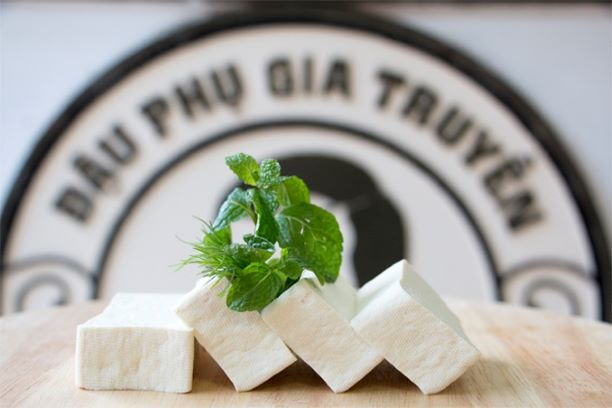

ĐẬU PHỤ SẠCH

2
NGƯỜI ĂN
10
PHÚT
NGƯỜI ĂN
50
PHÚT
TỔNG THỜI GIAN
220
CALO
THÔNG TIN DINH DƯỠNG
TỔNG LƯỢNG MỠ 11g
CHOLESTERON 0g
NATRI 470g
CARBONTHYDRATE 22g
PROTEIN 8g
CHUẨN BỊ
ĐẬU PHỤ ÔNG BỒNG7 chiếc
Farro 1 chén
1 thịt lợn3 lạng
Bông cải xanh1 cái
Cà rốt 1/2 củ
CÁCH LÀM
1
Trong nồi 3 quạt, đun nóng 3 chén nước, farro và bouillon để đun sôi; giảm nhiệt. Đậy nắp và
đun nhỏ lửa 25 đến 30 phút hoặc cho đến khi mềm. Thoát nước; mát mẻ.
2
Trong nồi 3 quạt, đun nóng 3 chén nước, farro và bouillon để đun sôi; giảm nhiệt. Đậy nắp và
đun nhỏ lửa 25 đến 30 phút hoặc cho đến khi mềm. Thoát nước; mát mẻ.
3
Trong nồi 3 quạt, đun nóng 3 chén nước, farro và bouillon để đun sôi; giảm nhiệt. Đậy nắp và
đun nhỏ lửa 25 đến 30 phút hoặc cho đến khi mềm. Thoát nước; mát mẻ.
4
Trong nồi 3 quạt, đun nóng 3 chén nước, farro và bouillon để đun sôi; giảm nhiệt. Đậy nắp và
đun nhỏ lửa 25 đến 30 phút hoặc cho đến khi mềm. Thoát nước; mát mẻ.
5
Trong nồi 3 quạt, đun nóng 3 chén nước, farro và bouillon để đun sôi; giảm nhiệt. Đậy nắp và
đun nhỏ lửa 25 đến 30 phút hoặc cho đến khi mềm. Thoát nước; mát mẻ.
Trở về món ăn